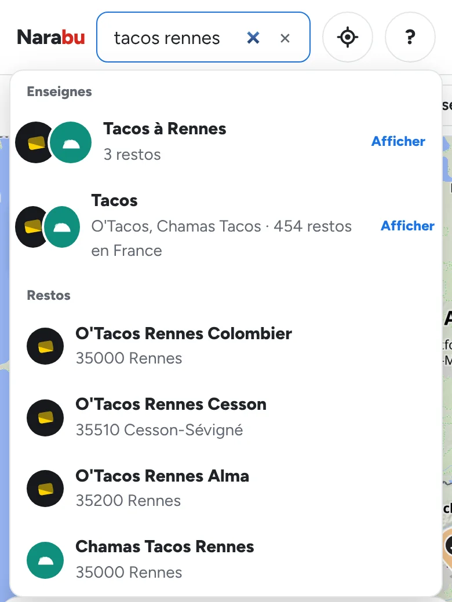
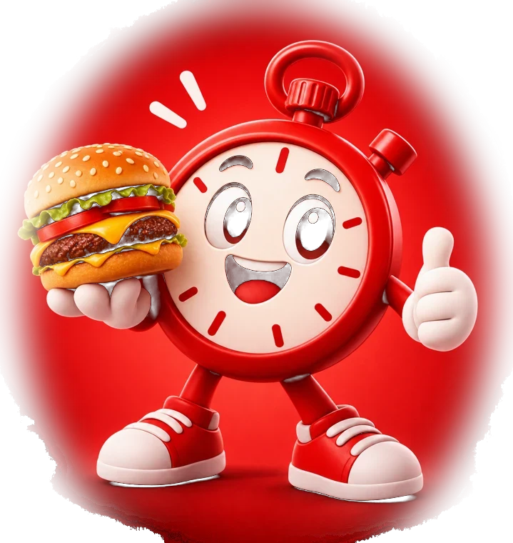
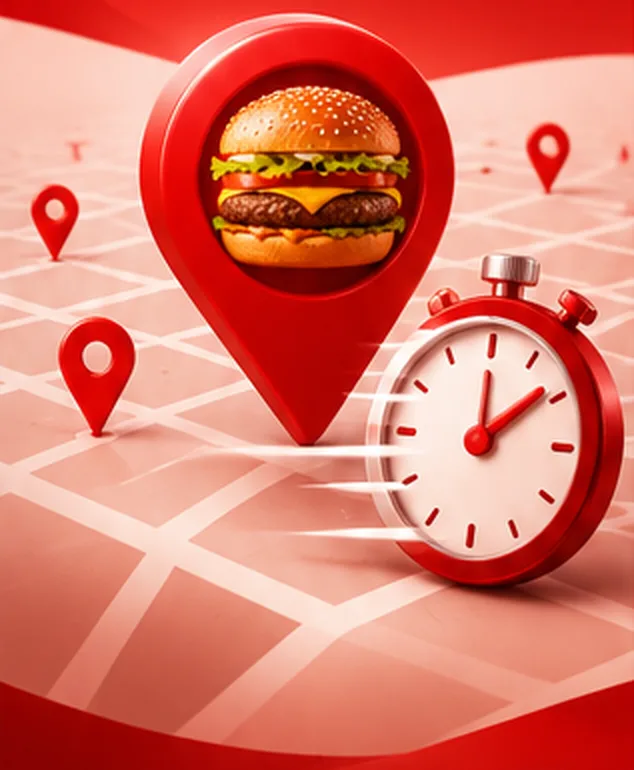
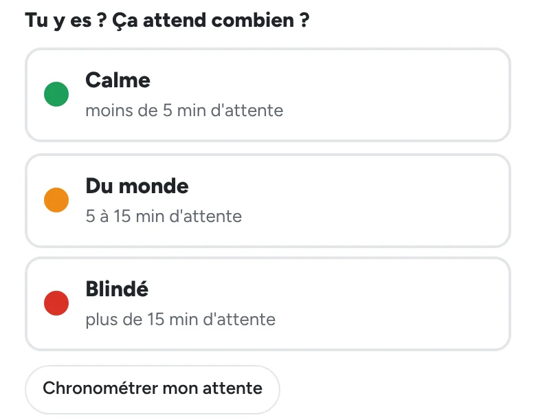
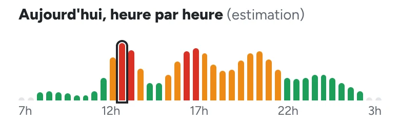
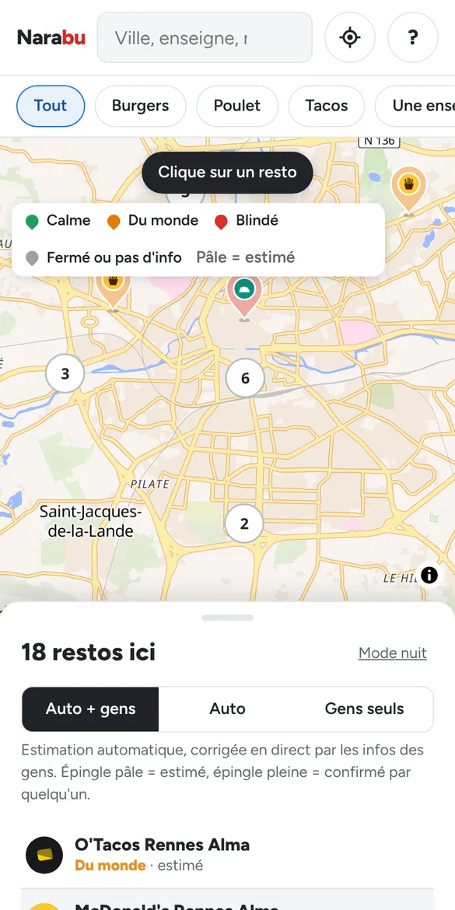
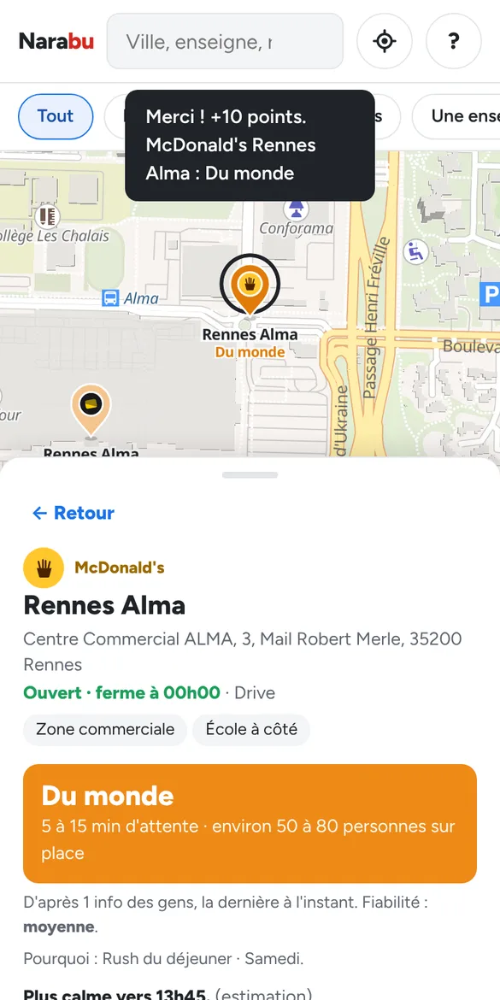
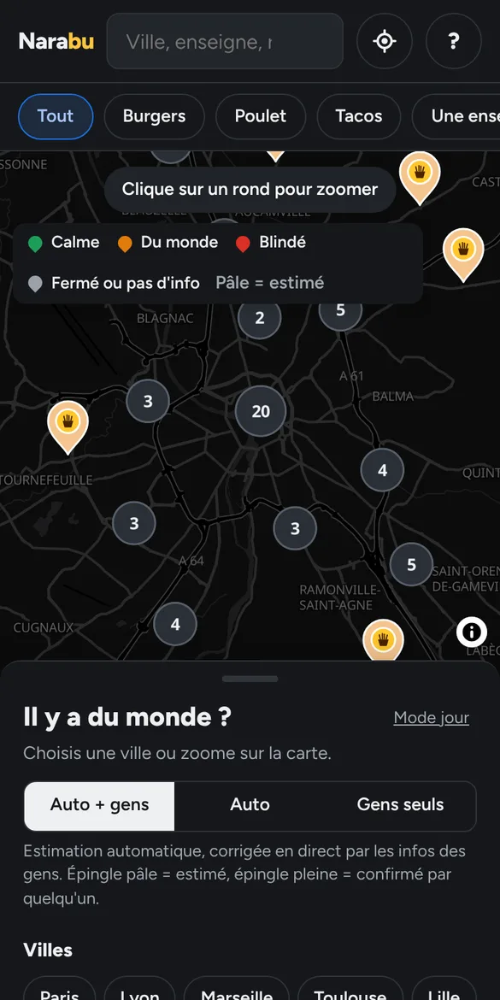
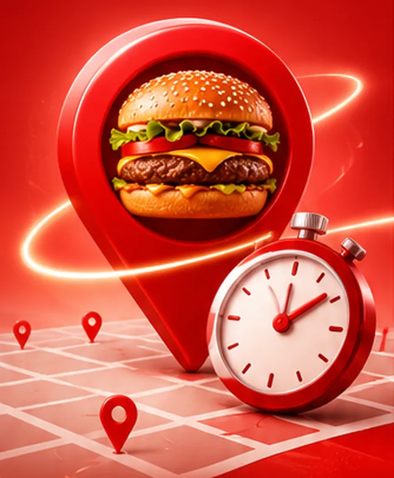
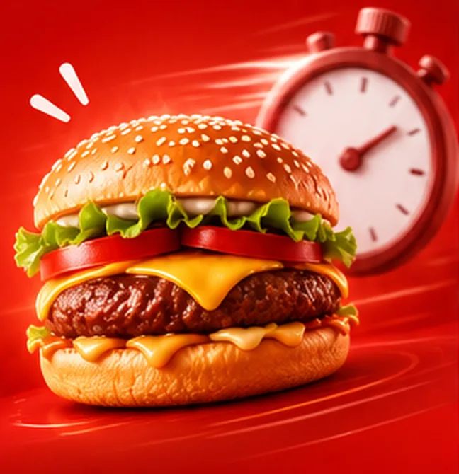

1
Trouve ton resto
Tape ta ville, ou directement le fast-food que tu veux : « Quick », « tacos rennes »… Tu peux aussi filtrer par type : burgers, poulet, tacos.

Regarde s'il y a du monde au McDo, au Burger King, au KFC, au Quick ou à O'Tacos avant d'y aller. Une carte simple, mise à jour par les gens sur place. Gratuit.
Comme Waze, mais pour la file du fast-food. Plus il y a de gens qui jouent le jeu, plus c'est précis.

Tape ta ville, ou directement le fast-food que tu veux : « Quick », « tacos rennes »… Tu peux aussi filtrer par type : burgers, poulet, tacos.

Sa couleur te dit s'il y a du monde. Pâle : c'est estimé. Pleine : quelqu'un sur place l'a confirmé.

Ton info s'affiche pour tout le monde et compte pendant 1 h 30. Tu gagnes 10 points à chaque fois.
Pas besoin de lire, la couleur suffit.
Épingle grise : le resto est fermé, ou il n'y a pas encore d'info.
Quand personne n'a encore rien dit, Narabu fait une estimation. Dès qu'une info arrive, elle passe devant.

Voilà à quoi ressemble Narabu sur ton téléphone.
Fais glisser pour voir les autres →

Chaque épingle, un resto. Les ronds avec un chiffre, c'est un groupe : clique pour zoomer.

L'attente, le nombre de gens à peu près, et quand ce sera plus calme.

Pour le McDo de 23 h sans te brûler les yeux. Ou reste en mode jour.
Garde-les, partage-les, fais tourner.
Fais glisser pour voir les autres →


Ouvre la carte, puis suis les étapes. L'icône arrive avec tes autres applis.
3 660 restos sur la carte. Trouve le plus calme près de toi.
Ouvrir la carte